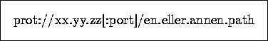

Som i de fleste språk, er det i HTML også mulig å legge inn kommentarer i koden. Kommentarer vil hverken vises eller tolkes, men kan gjøre koden mere leselig og forståelig for de som senere skal rette i koden. Det oppfordres til å bruke kommentarer.
En kommentar i HTML ser slik ut

Det anbefales ikke å la kommentarer gå over flere linjer, da mange browsere ikke støtter dette.